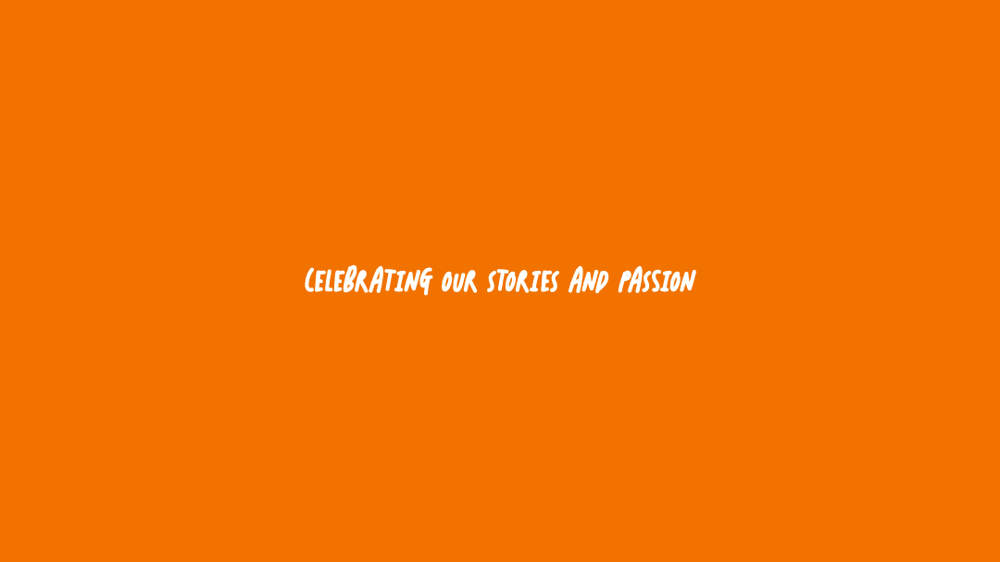

Welcome

WE ARE BRIARS AND IVY
An award winning student run publication from Briarcliff Manor, NY
|
v
Our magazine reviews all student submissions and judges them anonymously. Our club members voluntarily dedicate time and effort towards producing this publication. Submissions are accepted from current students from the beginning of the school year to mid-April. After months of reviewing, deliberating, formatting, and editing, we finally publish our magazine around the end of the school year.